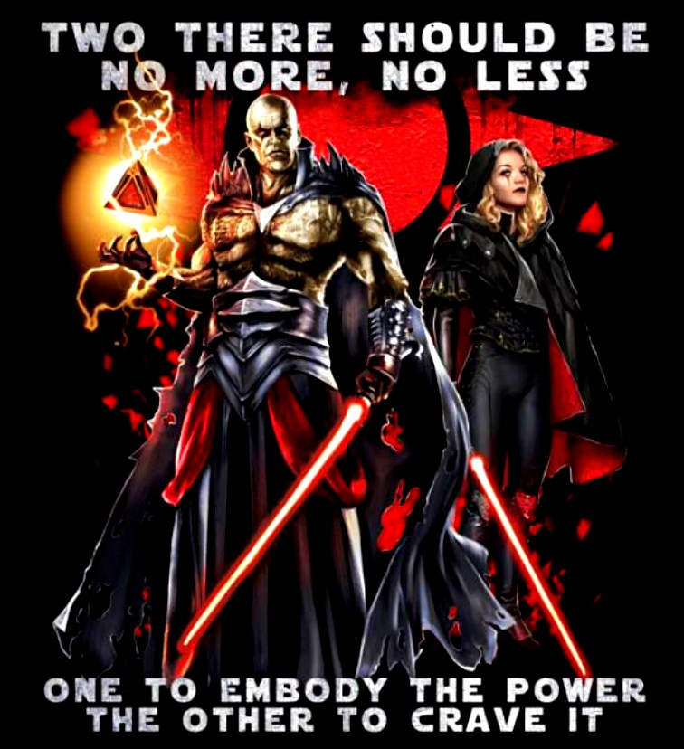

About Darth Bane
Darth Bane was a powerful Sith Lord who left a lasting impact on the Star Wars universe. He was the creator of the "Rule of Two" doctrine, which stated that there could only be two Sith at a time: a master to embody the power of the dark side, and an apprentice to crave it. This doctrine was intended to prevent infighting among the Sith and ensure their survival as a secret society. He was also a skilled duelist and strategist, and was known for his cunning and manipulation. He was instrumental in the defeat of the Jedi Order during the New Sith Wars, and his legacy as a master of the dark side lived on through the actions of subsequent Sith Lords. Throughout his life, Darth Bane was committed to the idea of the survival and growth of the Sith Order, and was willing to use any means necessary, including deception and betrayal, to achieve his goals.
Bane and his apprentice
Banes Characteristics
- Wielder of the dark side of the Force.
- Skilled duelist and strategist.
- Extremely cunning and manipulative.
- Ruthless and merciless.
- Willing to use any means necessary to achieve his goals, including deception and betrayal.
Relationships
Darth Bane considered few beings to be his friends. As a Sith Lord, he was driven by a desire for power and saw everyone, including potential allies, as mere tools to be used in his quest for domination. He was particularly dedicated to the idea of the survival and growth of the Sith Order, and saw anyone who posed a threat to that goal as an enemy to be defeated. One exception to this may have been his apprentice, Zannah, who he took under his wing and trained in the ways of the Sith. However, even with Zannah, it is unlikely that he considered her a true friend, but instead as a valuable asset in his plan to secure the future of the Sith. Click the link to learn about Zannah: